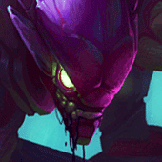

核心裝備
 妖夢鬼刀
妖夢鬼刀穿透與移速方便找側面孤立角度。
 星蝕
星蝕短時間爆發後提供護盾，增加第一波進場容錯。
 席利妲咒怨
席利妲咒怨提高技能穿透並增加追擊黏人能力。
 夜色緣界
夜色緣界進場前擋一次關鍵控制。
 守護天使
守護天使進化跳躍深切後提供一次復活。

Kha'Zix · 孤立爆發／擊殺刷新跳躍型物理刺客
不要把所有人都當孤立目標。先用二技遠距消耗，等敵方有人落單、被擊退或隊形散開再一技爆發；進化三技後擊殺刷新跳躍非常強，但第一跳一定要確定能拿到重置。
本站評級理由：卡力斯對孤立目標爆發非常高，進化跳躍後拿到擊殺還能刷新位移；歷史標準 ARAM 也有較高減傷，使他切入後容錯不差。問題是 ARAM 五人長期抱團，孤立條件很難穩定成立，所以實際輸出波動很大。
目前可追到的標準 ARAM 歷史調整為承傷 -20%（即承受 80% 傷害）；後續未找到明確回調公告，因此本站沿用該減傷。英雄本體同步 5.2a 一技基礎傷害與進化後冷卻返還增強。
穿透與移速方便找側面孤立角度。
短時間爆發後提供護盾，增加第一波進場容錯。
提高技能穿透並增加追擊黏人能力。
進場前擋一次關鍵控制。
進化跳躍深切後提供一次復活。

物穿直接提高對脆皮爆發。

控制很多時用韌性提高切入成功率。

從隱形或側面先手能放大爆發並取得額外經濟。

跳躍與隱形後提高第一套傷害。

對低血量目標補上額外爆發，強化收割能力。

擊殺參與高時快速堆輸出。

提高低血收割效率。

補第一跳與撤退角度。

提高孤立目標的斬殺確定性。
1 技 > 2 技 > 3 技
主 1 最大化孤立爆發，次 2 提高遠距消耗與續航；三技主要作進退與擊殺刷新，大絕能點就點。
前期敵方抱團時先二技消耗，不要直接跳進五人。注意被擊退或走位落後的孤立目標。
穿透裝成形後先從草叢或側面隱形接近。第一跳只有在斬殺線明確時使用，拿到重置再決定追或退。
你不是正面開戰者。等坦克把陣型打散後切孤立後排，若對方始終抱團就持續二技消耗並找殘血收割。
 巨蛇鋒牙
巨蛇鋒牙敵方護盾量很高時替換。
 致死宣告
致死宣告敵方高回復陣容時補重創。
 死亡之舞
死亡之舞物理爆發高且需要更多近戰容錯時使用。
看遊戲卡片下方分類 → 點相同分類 → 看左側 S+／S／A。
一技能孤立傷害與二技能消耗是主要輸出來源，技能增幅最穩。
三技能跳躍在擊殺後可刷新，身法類能在收割中連續觸發。
大絕隱形與跳躍都符合迷霧系列，能直接提高進出場容錯。
投射物、技能暴擊、施放大絕無敵與處刑都能提高第一殺成功率。
隱形與側翼找孤立目標很吃機動，跑速能幫助快速換角。
被動會強化脫離視野後的普攻，部分普攻卡在刺殺第一下有明顯價值。
v80.18.0 ARAM B 第一批：沿用卡力斯標準 ARAM 80% 承傷歷史設定，並同步 5.2a 一技與進化效果增強。
ARAM 使用獨立於召喚峽谷的資料集；本站會把官方模式平衡、單線 5v5 特性與出裝／符文適配分開判斷，而不是直接複製峽谷配置。